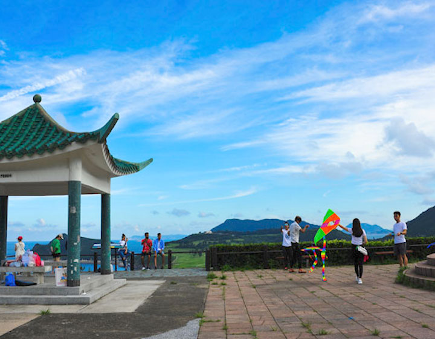
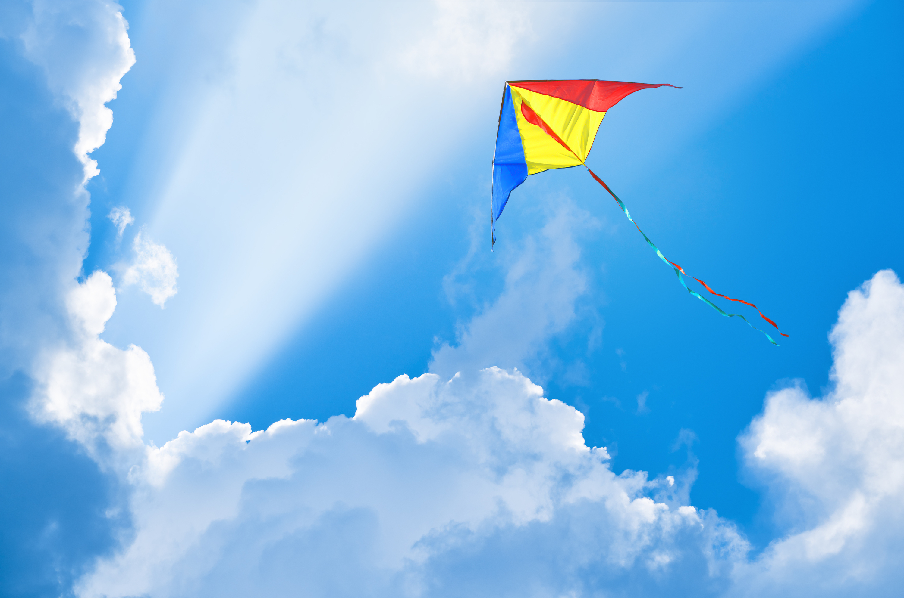

這個週末，我前往大尾篤享受了一場愉快的放風箏之旅。大尾篤以其開闊的空間和美麗的風景，一直是放風箏的絕佳地點。這次我嘗試了三款不同的風箏，每一款都帶來了獨特的飛行體驗。
晴空下的翱翔
天氣晴朗，微風輕拂，正是放風箏的好時機。我首先拿出了一款傳統的三角形風箏。它輕巧且易於操控，很快就在空中穩穩地飛翔起來，像一隻自由的鳥兒在藍天中盤旋。看著它在空中劃出優雅的弧線，心情也隨之變得開闊。

接著，我換上了一款造型更為複雜的軟體風箏。這款風箏沒有骨架，完全依靠風力充氣成型。它在空中展現出更為生動的姿態，隨著氣流的變化而舞動，仿佛一條彩色的巨龍在空中翻騰。雖然操控起來需要更多的技巧，但成功讓它高飛的那一刻，成就感也倍增。
最後，我嘗試了一款大型的特技風箏。這款風箏需要兩條線來操控，可以做出各種花式動作，如俯衝、盤旋和急轉彎。它對操作者的反應速度和協調性有較高的要求，但當我成功完成幾個特技動作時，周圍的遊客都發出了驚嘆聲。這種互動性極強的風箏，讓放風箏不再只是單純的觀賞，更是一種充滿挑戰的運動。

大尾篤的魅力
大尾篤不僅是放風箏的天堂，也是一個適合全家大小休閒的好去處。這裡有廣闊的草地、清新的空氣，還有遠處的山巒和海景，構成了一幅美麗的畫卷。在放風箏的間隙，我還在附近散步，欣賞了沿途的自然風光。這次的放風箏體驗，不僅讓我感受到了飛行的樂趣，也讓我更加親近大自然。
總的來說，這次大尾篤的放風箏之旅非常成功。三款不同風箏的體驗，讓我對放風箏這項活動有了更深的理解和熱愛。期待下次再到大尾篤，嘗試更多不同種類的風箏，享受更多飛行的樂趣！